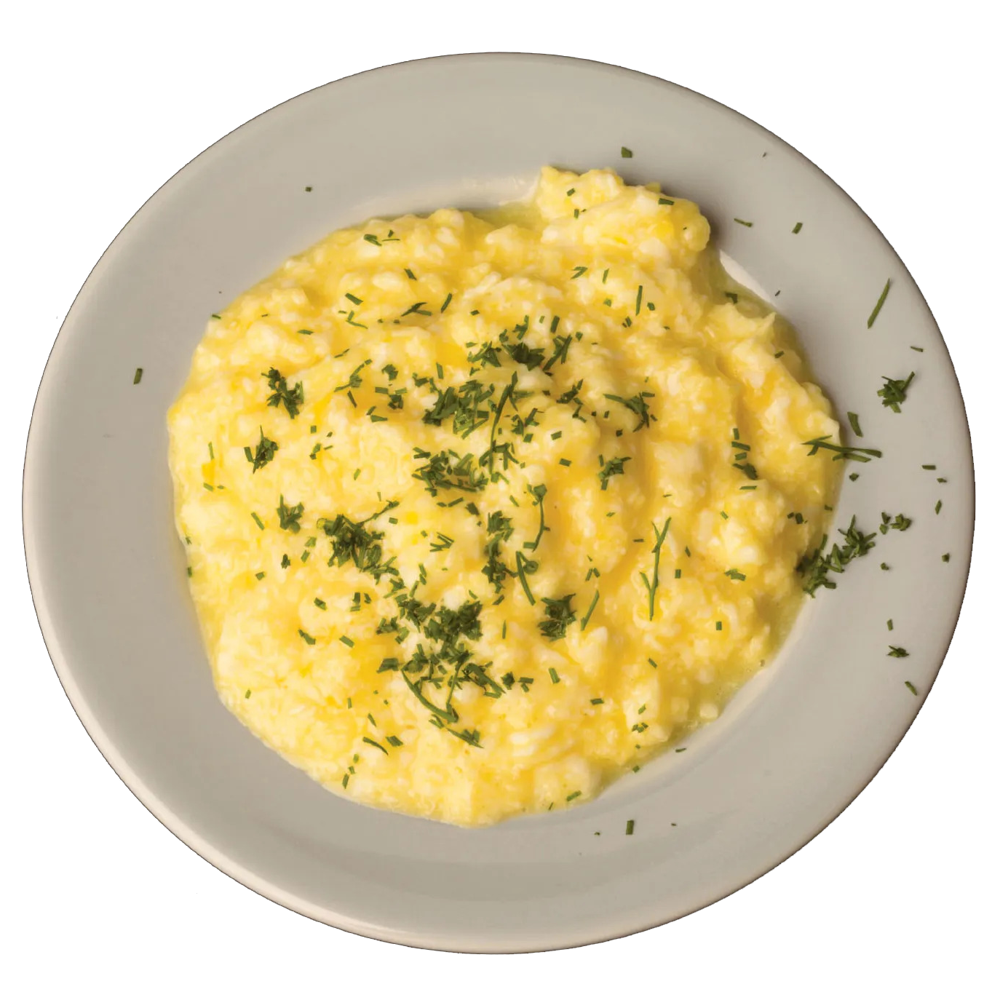

Scrambled Eggs

Description: A breakfast classic, quick and easy to make.
Ingredients:
- 4 eggs
- 2 tablespoons of milk or water
- Salt to taste
- Pepper to taste
- 1 tablespoon of butter
Equipment:
- Bowl
- Whisk or fork
- Frying pan
- Spatula
Instructions:
- Beat the Eggs: In a bowl, crack 4 eggs. Add 2 tablespoons of milk or water, a pinch of salt, and a pinch of pepper. Whisk until well combined.
- Heat the Pan: Place a frying pan over medium heat and add 1 tablespoon of butter. Allow it to melt and coat the pan.
- Cook the Eggs: Pour the egg mixture into the pan. Let it sit for a few seconds, then gently stir with a spatula. Continue to cook, stirring occasionally, until the eggs are softly set and slightly runny in places. Remove from heat; the eggs will continue to cook from residual heat.
- Serve: Serve immediately with toast or as desired.